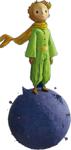

结局？
小王子没有回到他的星球
错过了就是错过了
"我本可以忍受黑暗，如果我不曾见过太阳"
小王子来自一颗遥远的星球
他曾爱慕着他星球上的一朵玫瑰。
但由于自己的愚蠢他最终选择了离开。
直到有一天他路过玫瑰园遇到狐狸，才知道世界上原来有那么多的玫瑰。
狐狸对他说：
“我的生活很单调。我捕捉猎物，而人类又捕捉我。所有的猎物全都一样，所有的 人也全都一样。因此，我感到有些厌烦了。
但是，如果你要是驯服了我，我的生 活就一定会是欢快的。我会辨认出一种与众不同的脚步声。其他的脚步声会使我 躲到地下去，而你的脚步声就会象音乐一样让我从洞里走出来。
再说，你看到那边的麦田没有？我不吃面包，麦子对我来说，一点用也没有。我对麦田无 动于衷。而这，真使人扫兴。
但是，你有着金黄色的头发。那么，一旦你驯服了我，这就会十分美妙。麦子，是金黄色的，它就会使我想起你。而且，我甚至会喜欢那风吹麦浪的声音……
再去看看那些玫瑰花吧。你一定会明白，你的那朵是世界上独一无二的玫瑰。”
小王子没有说话。
他知道自己已经无法回去了。望着漫天的星星，他已经不记得哪一颗是自己的星球了。